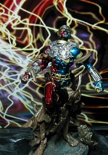
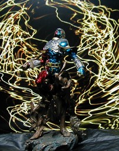

S.I.C. 匠魂 Vol. 3 キカイダー０１ (ゼロワン)

少し上から
ほぼ正面 S.I.C. 匠魂 vol.3 のキカイダー０１です。ストーリー上、０１は仁王像の中に隠されていたのですが、特撮のオープニングで使われたような、それを割って出てくるシーンをイメージしたフィギュアです。高さは、仁王の台もいれて11cm ぐらいです。人気のわりに数が少ないのか、匠魂を安価で手に入れやすいネットオークションでもプレミアが付いているようです。背景は Winamp の MilkDrop プラグインを WinShot したものです。 更新：06/02/12 初公開：2006年02月12日 21:14:42 Links: S.I.C.: http://www.tamashii.jp/sic/ MilkDrop: http://www.milkdrop.co.uk/ WinShot: http://www.woodybells.com/winshot.html